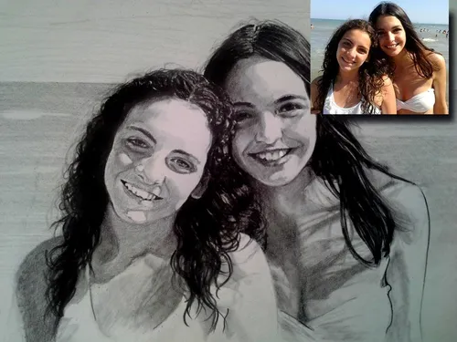

Desde que el hombre dibuja, busca plasmar con distintas técnicas, las caracteristias de una personalidad, de una etapa especial o de una relacion singular a través de un retrato. El mundo del arte está lleno de retratos y autorretratos famosos como: la Mona Lisa, los de Salvador Dali, los de Vincent Van Gogh. Un retrato puede profundizar en los rasgos deseados con una profundidad que la fotografia no puede alcanzar

ooooooooooooooooooooooooo
Si vive o esta de visita en... puede ver mis obras